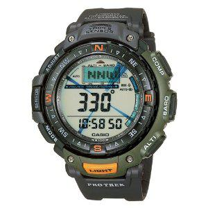

Casio Protrek Watch
I needed to buy a new watch and I wanted to get one that had altimeter and compass functions in addition to the "normal" watch stuff. I did quite a lot of research and it came down to a choice between the Casio Protrek and a Suunto Core. There is a good comparison on Youtube between the Suunto and a Casio Pathfinder here .
Casio Protrek
{kind=link}
The Suunto has more functions, but costs considerably more (around £170) than the Casio (around £90). The question was would I actually use any of the additional functions in the Suunto? The main additional functions in the Suunto are:
- Storm alarm if the barometric pressure drops suddenly.
- Intelligent switching between barometer and altimeter modes.
- Sunrise and sunset times.
- More logging options for the altimeter and barometer.
- User replaceable battery.
- Countdown timer.
- Magnetic declination setting on the compass.
Of these the only options I would really miss are the user replaceable battery and the countdown timer. I decided that for the difference in price, I could live without these.
You may ask, "Why do you need a countdown timer?". I quite often want to be reminded that I need to do something in 45 mins, or in two and a half hours. I know that I could set an alarm to remind me. However, using a countdown timer is much easier than doing the mental arithmetic and fiddling with the clock to set the alarm for the correct time.
So, I ended up ordering a Casio Protrek PRG-40-3VUR from Amazon. When it arrived I actually read the manual (there's a first time for everything). However, after a bit of familiarising myself with the various settings I found the watch very easy to use. I was particularly keen to try out the altimeter. By default the watch tries to work this out by itself, without requiring any reference setting. Not surprisingly this turned out to be not particularly accurate. However, once I set a reference altitude the altimeter was accurate. Having an altimeter when hill walking, or climbing can be very useful. In poor visibility it can make pin pointing your position on a mountain much easier and it's a useful check on how much more you need to climb before reaching the summit!
The compass seems accurate and will save me from having to keep getting my Silva out of the rucksack. The alarm doesn't have a snooze function and probably wouldn't be loud enough to wake me. However, I always have my phone with me, which fulfils both these requirements.
Unfortunately, after a couple of weeks one of the small screws securing the strap to the watch came out, thus the bar holding the strap on could easily slide out. I took the watch to several jewellers thinking that it would be a ten second job to put in a new screw. However, it seems that whatever size screw Casio use isn't generally available. I ended up returning the watch to Amazon for a replacement. To Amazon's credit the whole process was painless. I simply printed out a label for the courier to collect the old watch and Amazon dispatched a new one to me immediately. I wish that other on line retailers made this process as simple. I have only had the replacement watch a couple of days, so here's hoping that I don't have a problem with this one!